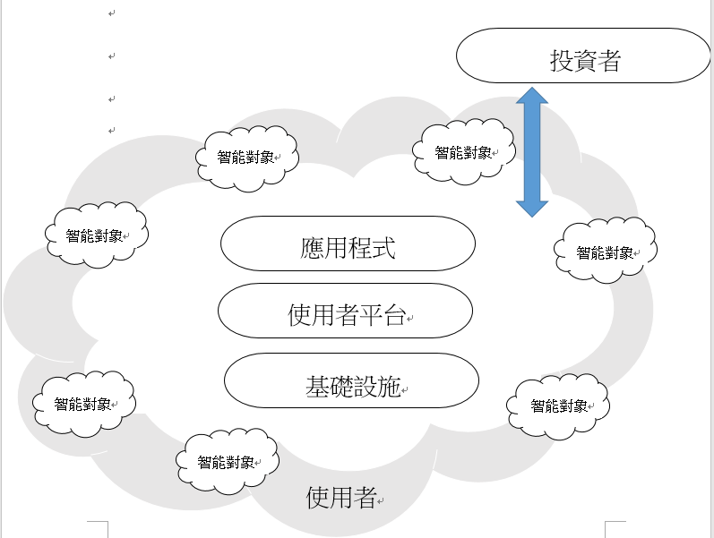

Assignment2 <<
Previous Next >> About
Assignment3
翻譯內容 topic3第2章 機電一體化中斷 : https://github.com/s40723219/cd2020/tree/master/downloads
topic2
MSModelingAndTFApproaches
數十年來，工程師們提出了新產品和新工程學科。在十八世紀初期，我們已經看到了新產品的推出結合了機械零件和電子零件。另一個因素機電一體化應用的蓬勃發展是價格的不斷下降電子零件以及設計非常小的系統的挑戰。今天，高性能的實例微處理器變得非常便宜，鼓勵在計算機控制系統中使用它們。
微控制器就是集成電路，就像微處理器一樣
包括：
- 相對簡單的中央處理器（CPU）
- 記憶
- 晶體振盪器
- 計時器
- 看門狗計時器
- 串行和模擬I / O
- 脈寬調製（PWM）模塊
機電一體化所需的零件設計，主要分為兩大類:(1)機械零件設計(2)電子電路零件設計
要達到機電一體的設計，還須經過數學建模，完成動力學系統的作動，最後再進行傳遞函數的分析與設計，最終才能達到機電一體化。
MechatronicDesignCases
成功完成所需設計所必須遵循的不同步驟機電系統。我們已經介紹了我們必須在設計：
本章的目的是向讀者展示我們如何實時實施我們在前幾章中為實際應用開發的理論結果系統。我們將逐步進行並顯示所有步驟，以簡化操作過程。我們在本章中考慮的案例研究是討論和在前幾章中進行了設計。
直流電機套件的速度控制
將使用這種直流電動機。我們將考慮的直流電動機由Maxon製造
公司。該電動機非常重要，因為它帶有齒輪箱（比率6：1），並且編碼器，每轉給出一百個脈衝，每轉給出600個脈衝通過使用正交方法將其發展到2000年的革命每轉四百個脈衝。在此示例中，我們使用的系統如果更靈活，我們將在前面介紹控制算法的實時實現並提供更多優勢。
直流電機套件的位置控制
使用該控制器，幅度為的階躍函數的時間響應等於30度，由此我們可以得出結論：控制器以％2的穩定時間滿足所有期望的性能至0.5115 s。但是，如果我們實現此控制器，實際情況將與由於變速箱的齒隙不包括在使用的模型中，因此，實時結果將有所不同，並且誤差永遠不會為零。至為了克服這個問題，我們可以使用比例和微分控制器在％2處提供更好的建立時間。
平衡機器人控制
它是為研究目的而開發的並允許機電一體化的學生實施他們的控制算法，並熟悉複雜的系統。機器人有兩個獨立的輪子由直流電動機通過齒輪傳動比為1：6的齒輪驅動。每個電機都有一個編碼器測量軸的速度。這兩個馬達連接到機器人。其他傳感器（如加速度計和陀螺儀）用於測量傾斜角度。引入了適當的濾波器以消除措施的噪音因此可以獲得有用的控制信號。
磁懸浮系統
由兩部分組成:一個固定的部分代表線圈並產生電磁力，另一個是通過作用於電磁場產生的電磁力而放置在某個位置的鐵磁物體，該系統的目的是通過輸入電壓調節電磁體中的電流來控制移動物體的垂直位置。使用霍爾效應傳感器測量物體位置。
topic3
MechaFutureAndChallenges
機電一體化系統概念問世以來，已有40多年的歷史了。
電子元件本身就具有控制和操作機械系統的能力，已經是一個快速的技術變革重要的時期。特別是，內部的重點已經轉移從硬件到固件和軟件的系統，導致引入圍繞智能設備的使用構建的各種消費品，他們中的許多人本質上仍然是機電一體化的，因為他們將機械工程學的核心，包括越來越複雜的電子產品和軟件。

MechaEducFutureNeed
機電一體化教育的重要性及其教育方法:
機電一體化能大幅地提高和改善系統的性能，在工業方面占有極大的優勢，成為現代學生必須研究的方向，而其教育方法分為:(1)演講(2)講座討論(3)示範(4)模擬(5)協同學習(6)合作學習(7)實例探究(8)角色扮演
全球的趨勢與其對機電一體化的影響:
對於全球趨勢，主要分別為:(1)人口變化以及老齡化社會醫療系統）(2)流動性 (3)全球化以及勞力、經濟、金融的變化(4)城市化和個性化(5)氣候變化和環境變化以及能源和資源、持續性(6)智慧型社會以及無所不在的情報、數位文化。
這些趨勢的結果也是該技術必須向前發展，由於多種學科的結合，機電一體化產品具有很高的產品開發潛力。然而機電一體化必須考慮的眾多方面:(1)問題與挑戰(2)系統設計、建模和模擬(3)製造技術(4)物聯網和網路物理系統(5)通訊及訊息技術(6)機電一體化的教育。
Assignment2 <<
Previous Next >> About